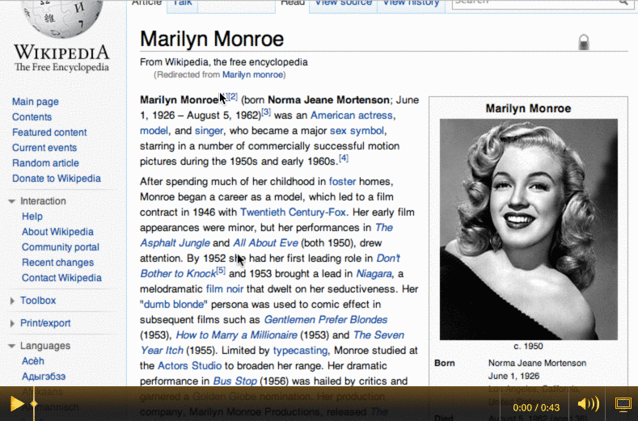

Умови
Є 6 завдань, кожне наступне важче за попереднє.
На перші 4 ви витратите пів години. На останні три - ще по годині на кожне.
Виконані завдання відправте мені на пошту e.chechurin@gmail.com із темою “Заочники”.
Кожне із завдань - окремий лінк на jsbin (онлайн редактор коду).
Завдання
Як що працює легко зрозуміти із гіфки. В складних випадках додав лінк з відео.
Якщо вам щось не зрозуміло - робіть на свій розсуд.
Зовнішній вигляд повторювати один в один не обов”язково.
1.Cnopka
На сторінці кнопка. Кожен клік на кнопку збільшує лічильник.
2.Colorit
На сторінці блок, що плавно змінює колір. Користувач нічого не робить - блок сам. :)
Від чорного, до червоного, від червоного до жовтого, від жовтого до білого. Вибір кольорів залишаю за вами.

3.Keep calm and follow the white rabbit
На сторінці блок. Користувач водить мишу - блок переслідує курсор.
4.WOW, that’s HTML Editor
Редактор тексту, що підтримує HTML.
Зліва пишеш - на правому боці результат.
5.*****
Віджет із зірочками. Користувач наклікує рейтинг.
Для деяких значень рейтингу є словесні назви.

Чи відос
6.Select, listen, add, remove, toggle, show, hide..
Вам потрібно написати власний фреймворк для роботи із DOM.
Не намагайтеся одразу охопити все - реалізуйте базову функціональність.
Вибір елементів, додати клас, видалити клас, управління атрибутами і все таке.
Головне сфокусуйтеся на реалізації каркасу.
Функціональну реалізацію методів можна брати вже реалізовану із існуючого коду/фреймворку.
Оп, хтось до вас вже написав фреймворк.
TinyDOM
zepto
jQuery
dojo
7.Два монро (hard-core)
На сторінці будь-який текст. По даблкліку в тексті показується картка. Контент картки приходить з сервера, але ви можете взяти довільний і викорстати один і той самий для усіх карток. Залежно від того де клікнули - картка буде зі стрілкою знизу, або зверху. Позиція стрілки міняється залежно від місця кліку (стрілка вказує на середину виділеного слова). Враховуйте скрол сторінки. Ширина та висота самого картки кастомні і можуть змінюватися в залежності від контенту.

От ще відос, якщо не зрозуміло.